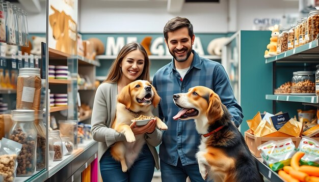
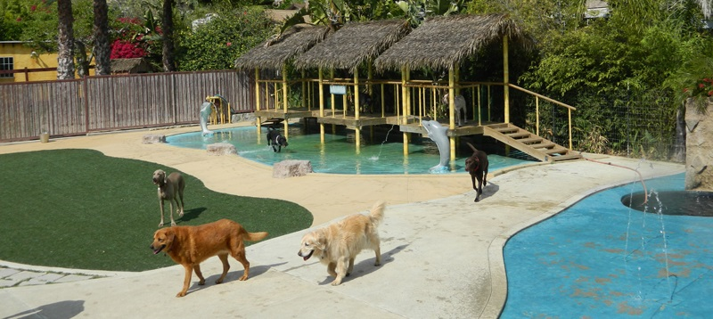

VIAPets: A Journey in Pet Care Founded in Northern Europe, VIAPets started as a small pet shop offering a variety of animals. During the COVID-19 pandemic, demand surged as people sought pets for companionship. To adapt and grow, the shop expanded by introducing a kennel service, providing care for pets while owners traveled. This transformation led to the rebranding as VIAPets, emphasizing the belief that every animal is a "Very Important Animal" (VIA). With its unique blend of pet sales and boarding services, VIAPets became a community favorite. The shop also embraced a “recycled pets” initiative, helping to rehome pets from previous owners. Vision: VIAPets aims to expand its services further, continuing to be a trusted, all-in-one solution for pet owners while promoting responsible pet care and adoption.